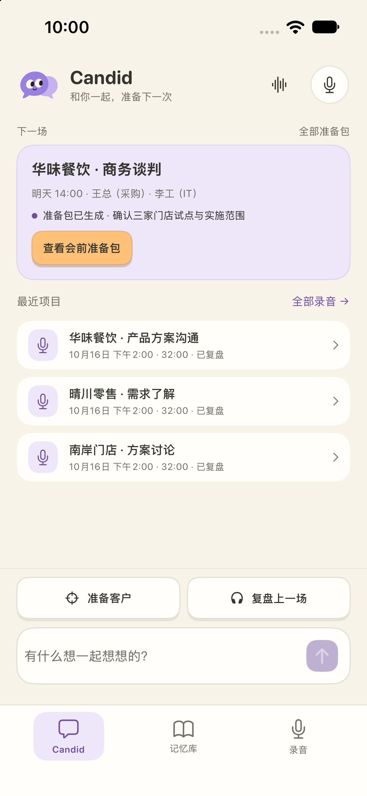
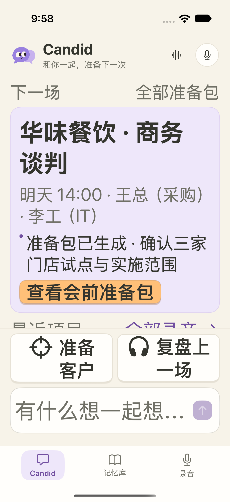

CanDid · HTML 还原交付
左侧为用户提供的 HTML，右侧为本轮原生 App 截图。保留已确认的语音、手机备用录音、个人介绍、资料管理与跨场确认；原文额外恢复逐句回听。
验证：后端 166 项 · 原生单元 22 项 · 12 条不同 UI 流程 · iPhone 17 / 15 Pro / iPad 适配
逐句回听已通过 App → 本机 HTTP → AVPlayer；真人收音及录音豆硬件不属于本轮已验证结果。
查看实现与测试记录 逐句回听请求证据
首页
全宽底栏、两枚快捷按钮、同一输入框与发送箭头；保留顶部连续对话及全部准备包入口。
当前原生 App
准备包
目标卡、编号建议和来源区；只读详情隐藏主导航。
录音复盘
常驻播放器、浅绿总结和编号表达；内容由真实记录驱动，示例条数不会强行补齐。
录音原文 · 用户指定例外
每个真实转写片段有独立播放／暂停；姓名认领、修订及完整回听保留。
当前原生 App
录音空状态
紧凑标题及空状态；手机会议录音作为次要备用。
Chat
输入框不随展开替换，草稿保持；系统键盘为原生界面。
设备与辅助字号
iPhone 15 Pro
iPhone 17 辅助字号